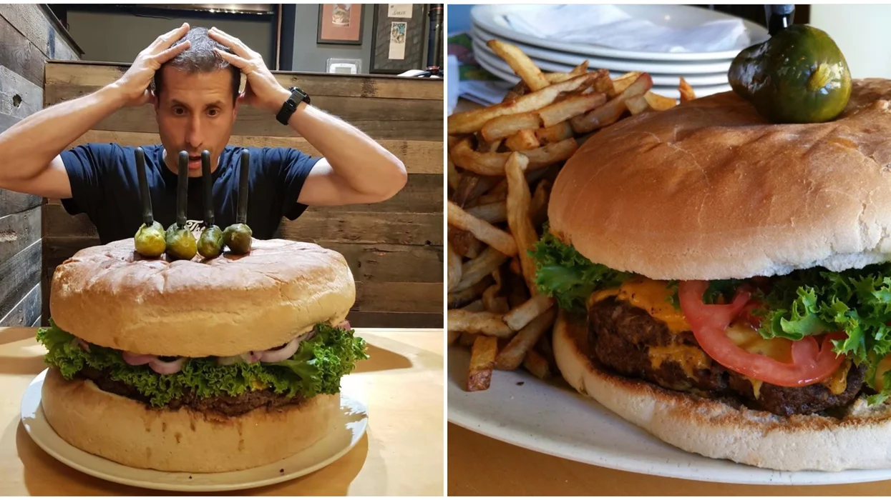

Don't eat sh%+, bigger than your head
I do believe, this may have been my fathers favorite saying, and no it isnt dietary advice. Pop would use this term whenever he felt there was a chance we were taking on more than we could handle. Most parents would say "dont bite off more than you can chew".
A ha ha nest fulla teehee eggs.
Growing up whenever we were having fun, especially if we were rough housing, Pops would say this. The translation is you're laughing now but your going to be crying later. It was understood by all the kids not to bother Pops with whatever event caused said tears. Unless it was funny...